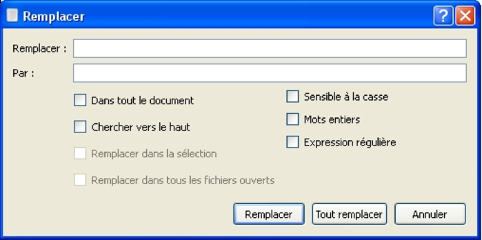

Aller plus loin : outils d’édition
Lorsque vous aurez TEXworks bien en main, vous sentirez le besoin d’avoir des outils pour être plus efficace. Beaucoup d’outils existent dans TEXworks. Nous les passons maintenant en revue.
4.1 Créer un document à partir d’un modèle
Les documents que vous créerez ont le plus souvent les mêmes instructions dans le préambule, on charge les mêmes modules, on définit les mêmes caractéristiques de page, on définit aussi des en-tête et pied de page personnalisés. On peut utiliser les modèles prédéfinis ou créer ses propres modèles contenant tous ces pré-requis.
Utilisez Fichier→Nouveau à partir d’un
modèle... ou CtrlMajN (Mac OS
X :  MajN). Une boîte de dialogue s’ouvre pour permettre
la sélection du modèle. Après sélection et OK un document est créé et on
peut commencer à travailler.
MajN). Une boîte de dialogue s’ouvre pour permettre
la sélection du modèle. Après sélection et OK un document est créé et on
peut commencer à travailler.
Si on désire créer un modèle plus personnalisé, il suffit de créer ce document avec tout ce que l’on désire toujours y trouver (et en marquant éventuellement des emplacements à compléter) et de l’enregistrer comme fichier .tex dans le répertoire ressources de TEXworks <ressources>\templates ou un sous-répertoire éventuel de celui-ci, si vous le désirez.
4.2 Créer un projet sur plusieurs fichiers sources
Lorsque la source d’un document devient longue, il est parfois difficile de se déplacer dans celle-ci et de la gérer. On a alors avantage à scinder le fichier source en plusieurs fichiers plus petits : un fichier sera le document principal, central, qui contiendra le préambule, l’environnement document, ainsi que des appels aux « sous-documents » 1, qui pourraient contenir des chapitres séparés.
Mais il y aura un problème si, étant dans un sous-document, on lance la composition/compilation ; comme il n’y a pas de préambule ni d’environnement document LATEXs’arrête immédiatement sur erreur.
Pour signaler à TEXworks qu’il doit compiler le document principal on ajoute au début du fichier sous-document l’instruction :
par exemple :
Si le fichier principal est dans le même dossier, son nom suffit, comme dans l’exemple ci-dessus. Sinon vous devez fournir le chemin vers le document principal (de préférence relativement au sous-document en question, p.e. ../manuel.tex). Remarquer aussi l’utilisation des barres obliques « / » et non des contre-obliques « \ » utilisées par Windows pour séparer les niveaux de dossiers.
De plus, avec MikTeX, l’appel au sous-document, \input{nom.tex}, doit inclure l’extension .tex pour que SyncTeX fonctionne convenablement (voir la section 5.1 ).
4.3 Vérification d’orthographe
On peut demander de faire une vérification orthographique automatique durant la frappe par Édition→Vérification orthographique→<choix de langue> : par exemple fr-FR pour le français. Il est également possible de demander à TEXworks de permettre une vérification orthographique par défaut par Édition→Préférences... →Éditeur→Langue de vérification orthographique :.
Lors de la frappe, s’il y a une erreur pour le correcteur, le mot est souligné par un liséré rouge. Un clic-droit sur le mot ouvre un menu contextuel dans lequel il y a des propositions de mots de remplacement. Cliquer sur le mot désiré pour effectuer le remplacement.
Avant d’utiliser la vérification orthographique, il faut installer des dictionnaires dans le bon dossier de TEXworks : <ressources>\dictionaries. Le dossier <ressources> est atteint facilement par Aide→Paramètres et ressources...
On peut utiliser les dictionnaires disponibles pour OpenOffice.org et d’autres logiciels libres 2 ; si par exemple vous avez Mozilla Thunderbird avec correction orthographique, vous pouvez copier les fichiers .aff et .dic.
4.4 Rechercher et remplacer
4.4.1 Les actions classiques
Les options du menu Recherche–Rechercher..., Chercher encore, Remplacer...,
Remplacer encore et Aller à la
ligne... (CtrlF, CtrlG,
CtrlR, CtrlMajR et
CtrlL
respectivement (Mac OS X :
F, G, R, Shift ⇑R et
L) sont des actions
classiques ; la
première et la troisième provoque l’ouverture d’une boîte de
dialogue :

On y trouve les options habituelles : Recherche en boucle – dans tout le documentChercher vers le haut, Chercher/Remplacer dans la sélection ou Chercher toutes les occurences. Sont aussi classiques les options Sensible à la casse et Mots entiers. Par défaut la recherche se fait vers le bas, la fin du texte.
L’option Remplacer dans tous les fichiers ouverts est une extension fréquente, mais pas aussi répandue que les autres ; cela permet de faire, par exemple, des remplacements dans tous les fichiers d’un projet – faites attention que ceci est très puissant.
La dernière option, Expression régulière, est expliquée ci-après.
Dans le menu Recherche il y a d’autres options :
- Copier vers Rechercher
- copie le texte sélectionné et l’envoye dans la zone de saisie Rechercher : de la boîte de dialogue Rechercher ou Remplacer ; vous devez encore ouvrir les dialogues séparément ;
- Copier vers Remplacer
- on peut faire de même avec un texte de remplacement vers la zone Par : de la boîte de dialogue Remplacer ;
- Trouver la sélection
- utilise la sélection pour une recherche sans ouvrir la boîte de dialogue Recherche – très rapide ;
- Montrer la sélection
- , nous ramène immédiatement au texte sélectionné – pratique si on a sélectionné un texte et qu’on s’est déplacé dans le document par la glissière latérale, pratique aussi si on ne fait pas passer les lignes à la ligne.
4.4.2 Recherche/Remplacement avancé (les expressions régulières)
Les expressions régulières forment un outil très performant, mais qu’il convient de bien comprendre. Il faudrait un manuel uniquement pour cet apprentissage 3, mais nous allons donner quelques idées d’utilisation. Voir aussi les expressions disponibles dans la section B .
Supposons que nous ayons le texte suivant :
dans du texte accentué.
Voici du texte pour tester les expressions régulières dans
du texte accentué.
Voici du texte pour tester les expressions régulières. Voici
du texte pour tester les expressions régulières.
truc truc
tél.: 010-99-99-99
tél.: 00.32.10.99.99.99
tél.: 00/32-10/99.99.99
Nous désirons d’une part
- séparer les différents paragraphes par une ligne vide après « accentué » (pour créer des paragraphes dans LATEX) mais pas pour les trois numéros de téléphone ;
- remplacer les deux caractères tabulations (tab)qui séparent les deux mots « truc » du quatrième paragraphe chacun par trois espaces et, enfin ;
- uniformiser les numéros de téléphones en remplaçant les divers caractères de ponctuation par des espaces.
Pour 1) dans la boîte de dialogue Remplacer (CtrlR) pour Rechercher : on mettra ›\n‹ 4 et dans Par : ›\n\n‹. ›\n‹ est le code pour le passage à la ligne. On prendra soin d’avoir sélectionné les quatre premiers paragraphes et le début du cinquième (premier numéro de téléphone) et de cocher les cases Remplacer dans la sélection et Expression régulière ; si on ne l’a pas fait et qu’une ligne vide a été insérée entre toutes les lignes, sélectionner les lignes de téléphone et faire l’opération inverse : replacer ›\n\n‹ par ›\n‹. Donc nous avons remplacer un passage à la ligne par un double, en créant ainsi une ligne vide.
Pour 2) on utilisera ›\t‹ et ›␣␣␣‹ 5. ›\t‹ est le code représentant une tabulation, un espace est entré tel quel (ici représenté par ␣).
Pour 3) ce sera : rechercher ›-|\.|/‹ et remplacer par ›␣‹. Ici, ›|‹ fournit les diverses alternatives (-, ., or /) ; pour le point nous avons utilisé ›\.‹ car le point seul est un code d’expression régulière qui représente n’importe quel caractère et nous aurions donc remplacer tous les caractères par un espace ! ! Nous devons dès lors utiliser un code pour avoir le point – en mettant une contre-oblique devant le point, on précise que le point doit garder son sens propre plutôt que le sens spécial qu’il a généralement dans les expressinos régulières.
Si on a des chaînes d’un même caractère mais de longueurs différentes (exemple 3, 4, 5 fois le caractère e) et qu’on veut tout ramener à une chaîne plus courte (exemple 2), on peut demander de remplacer la chaîne ›e{3,5}‹ par ›ee‹.
Si on veut insérer devant une série de paragraphes séparés ou non par une ligne vide une même chaîne, par exemple ›\noindent␣‹ ou ›\item␣‹, on peut remplacer ›\n\n‹ ou ›\n‹ par ›\n\n\\noindent␣‹ ou ›\n\\noindent␣‹. Attention, on a doublé le \ devant noindent pour en avoir un (\noindent), parce que \ est un caractère d’échapement dans les expressions régulièrs (nous l’avons rencontré auparavant dans l’expression \.) !
Si cela avait un sens, nous pourrions remplacer toutes les lettres comprises entre « a » et « m » par « $ » en utilisant ›[a-m]‹ et ›$‹.
4.5 Autres outils d’édition et de recherche d’erreur
4.5.1 Outils standard
Il est toujours possible d’annuler une action non-désirée par
Édition →Annuler ou
CtrlZ
(Mac OS X : Z) ; on peut ainsi annuler à
reculons ! L’opération
inverse, annuler l’annulation ou refaire, s’obtient par Édition→Répéter/refaire ou CtrlMajZ (Mac OS X
MajZ.) 6
TEXworks dispose aussi des outils classiques d’édition comme le presse papier ; on peut donc sélectionner, couper/copier puis coller une partie de texte.
On peut sélectionner à la souris en « glissant »
sur le texte à sélectionner, et on peut aussi « double cliquer »
pour sélectionner un mot. Au clavier il suffit de se déplacer en
maintenant la touche Maj
enfoncée ; on utilisera
les touches de direction seules avec Maj ; mais on peut aussi se déplacer
et sélectionner par mot en se déplaçant à gauche ou à droite en
maintenant CtrlMaj enfoncés ( Shift ⇑ sous
Mac OS X). Les raccourcis clavier du presse papier sont les
raccourcis que l’on trouve dans pratiquement tous les
logiciels : Ctrl-X pour couper, CtrlC pour copier
et CtrlV pour coller ( X, C et V respectivement,
Mac OS X.)
On peut facilement changer la casse d’une sélection – tout mettre en capitales ou tout en minuscules – par Édition→Changer la casse puis, suivant le cas, TOUT EN CAPITALES ou tout en minuscules, ou Inverser la casse (qui bascule la casse de chaque lettre idividuellement.)
Il est aussi pratique de voir les numéros de lignes, car tous les messages d’erreurs font référence à ces numéros ; vous pouvez basculer on/off l’affichage des lignes, sur la gauche du panneau de saisie, par Format→Numéros de ligne.
4.5.2 Commenter
Quand on met au point un texte pour (LA)TEX il est souvent intéressant d’empêcher la compilation d’une partie du texte pour arriver à localiser les erreurs ; on progresse ainsi morceau de texte par morceau de texte qui fonctionne jusqu’à rencontrer un fragment qui cause une erreur. Pour cela on commentera la source par bloc.
Nous avons vu que le signe % indique le début d’un
commentaire. Pour commenter une grande partie de texte, il suffit de la
sélectionner puis de demander le marquage en tant que commentaire
Format→Commenter ou
Ctrl(
(Mac OS X : Shift ⇑].)
Pour supprimer la mise en commentaire : sélectionnez les lignes et choisissez
Format→Dé-commenter ou Ctrl) (Mac OS
X : Maj[ 7.
4.5.3 Équilibrer les délimiteurs
Une erreur fréquente est d’oublier un symbole
fermant : parenthèse,
accolade, crochet,etc. TEXworks propose un
outil pour mettre en évidence les paires de symboles : lorsqu’on passe sur un de ces
symboles son complémentaire est brièvement mis en sur-brillance
orange. On peut également, quand on est à l’intérieur d’un bloc
ainsi délimité demander de le sélectionner par Édition→Sélection d’un bloc entre délimiteurs ou son raccourci CtrlB (Mac OS
X : B). On voit ainsi
directement l’ampleur du bloc.
4.5.4 Guillemets intelligents
Une autre erreur similaire, mais ici sémantique et n’ayant aucune influence sur la composition, est rencontrée dans l’utilisation des guillemets lorsqu’on désire mettre un texte en évidence.
En français il y a des guillemets ‘simples’ et des guillemets « doubles ». On utilise également les guillemets “anglais” pour un texte entre guillemets dans un texte déjà entre guillemets. Les guillemets simples et doubles anglais sont obtenus par ` et ’ ; ce ne sont pas les guillemets utilisés en programmation et trouvés sur la clavier " et ’. Mais utilisant le système des guillemets intelligents de TEXworks, on peut utiliser ces derniers pour produire automatiquement les guillemets simple/double ouvrants et fermants.
Dans un document .tex, sélectionnez un des systèmes de guillemets intelligents : Format→Guillemets intelligents→Ligatures TeX, →Commandes TeX, →Caractères Unicode 8. Ensuite dans votre texte, lorsque vous voulez commencer un texte mis en évidence, disons des guillemets doubles, entrez " puis le texte et pour terminer de nouveau " ; TEXworks va automatiquement insérer les guillemets ouvrants `` et ensuite les guillemets fermants corrects ’’. Les trois options donnent le même résultat dans le document composé, mais Ligatures TeX devrait bien fonctionner dans la plupart des cas.
Enfin, il est possible de définir ses propres systèmes de guillemets (dans le fichier de définitions (smart-quotes-modes.txt dans le dossier configuration du dossier ressources.) Par exemple, pour les guillemets français de babel, ajoutez le code suivant :
4.6 La complétion automatique
Un autre outil dont on ne peut rapidement plus se passer est la complétion automatique. En effet, quand on utilise (LA)TEX, on doit continuellement entrer des codes pour, par exemple, créer des environnements ; de plus dans ce cas il ne faut pas oublier de les fermer.
La complétion automatique permet de taper une suite de caractères, on pourrait dire un mot clé, puis en tapant ⇆TEXworks crée automatiquement le code de la commande ou de l’environnement (LA)TEX.
Par exemple, pour obtenir « LATEX », il faut entrer \LaTeX. Ce n’est pas difficile, mais l’introduction du “\” 9 puis du mot “LaTeX” avec l’alternance de majuscules et de minuscules peut devenir fastidieux à la longue. Par la complétion automatique il suffit d’entrer latex puis taper TaB pour obtenir \LaTeX. Il faut juste veiller à ne pas avoir une lettre accolée devant ou derrière latex – par ex. alatax – sinon le mécanisme pourrait ne pas choisir le mot clé correct.
Autres exemples, bmin produit :
le curseur de saisie se trouve dans la paire d’accolades vide où il faut entrer la dimension de la minipage. Voir la section A.3 pourune liste des mots clé d’autocomplétion. Remarquons le « ∙ » dans l’environnement minipage. C’est une marque que l’on peut atteindre par Ctrl⇆ (Option⇆ sur le Mac), en répétant ce raccourci, on avance dans la structure créée et par CtrlMaj⇆ (OptionShift ⇑⇆) on recule.
Il est à remarquer que si on donne un mot clé partiel et que l’on appuie successivement sur ⇆, on peut avoir d’autres complétions, généralement associées. Par exemple, bali (le b indique un début d’environnement \begin{}) crée l’environnement align après un ⇆, align* ensuite, successivement alignat, alignat*, aligned, alignedat, alignedat avec option ; ces derniers environnements ont leur propre code qui commence par bali (balis, baliat, baliats, balied, baliedat et enfin baliedato.)
Enfin, si vous désirer créer vos propres raccourcis, vous pouvez toujours ajouter un fichier .txt dans le sous-répertoire completion du répertoire ressources. Les entrées dans ce fichier seront de la forme :
Dans le premier cas, pour l’environnement figure avec option, bfigo est le mot clé, puis vient l’affectation := et la définition : écrire \begin{figure}[] \end{figure} avec un passage à la ligne après le begin (#RET#), laisser une ligne vide (deuxième #RET#) et mettre le curseur d’insertion entre les crochets (#INS#) ; « ∙ » est la marque de déplacement expliquée plus haut.
Dans le deuxième cas il n’y aura que \bibliography{} lui-même et TEXworks créera le nom complet avec accolades (le curseur entre elles.) Dans ce cas le mot clé est l’instruction elle-même.
Il faut veiller à créer des fichiers .txt encodés en utf-8 ; on peut pour cela utiliser le programme TEXworks lui-même, qui utilise cet encodage par défaut.